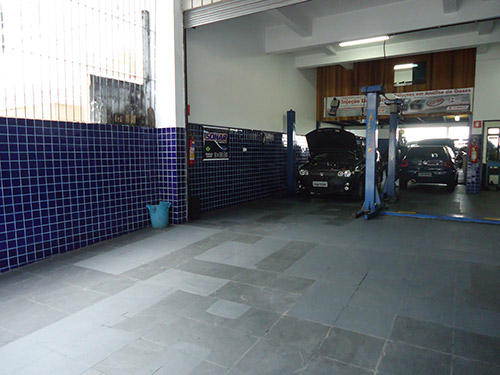
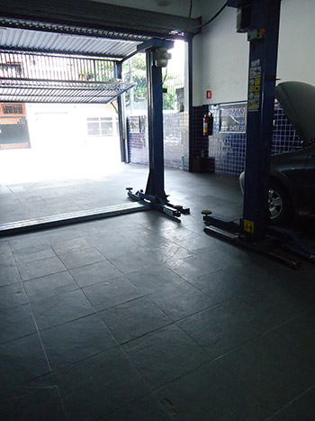
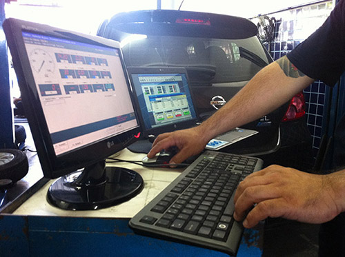
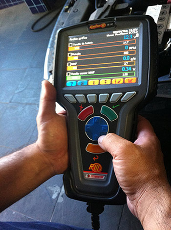

Elétrica, injeção eletrônica, freios, suspensão e diagnóstico computadorizado — para carros nacionais e importados.

Infraestrutura pra atender os requisitos de manutenção e reparo do seu carro, do básico ao diagnóstico eletrônico.
Atendemos todas as marcas — nacionais e importados. Ver todos os 13 serviços →
Antes de trocar peça, a gente escaneia. Investimos em equipamento de diagnóstico de alta tecnologia pra apontar o problema com precisão, em qualquer marca.



A MIEKEN nasceu em 1998 com o objetivo de prestar serviço de alta qualidade, eficiência e atendimento de verdade. Atuamos no mesmo endereço desde a fundação, com equipe treinada e equipamento atualizado pra atender qualquer marca do mercado.
Ligue e marque um horário. Equipamento profissional, equipe treinada, 28 anos de endereço fixo.